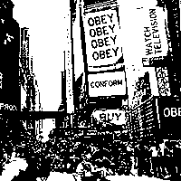

They Live - Simple Steganography
Just for fun. Currently a work-in-progress.
Frequently Asked Questions
- What is steganography?
- Hiding a message within another message. In this case, we are hiding a black-and-white picture within a color picture.
- Why would someone want to do that?
- If a secret message is intercepted, it is obvious that it is a secret message, right? But what if the secret message looks like a different, harmless message? Steganography would allow people to share a message that, on the surface, looks like something innocuous (for example, a Business Cat meme) but contains a hidden message.
- Can I use this to send secret messages?
- Well, yes and no. It would be pretty easy to figure out that there is a hidden message. The hidden message will be hard to decode if you use a custom key, though. I wouldn't use this to hide information from an intelligence agency, but you might be able to hide something from your parents. Assuming your parents don't work for an intelligence agency. There is a saying in the information technology community: "Don't roll your own crypto." Translated, that means you are better off using well-studied, industry-standard cryptography methods (like TLS, which is used by HTTPS) than creating your own (or using one made by me).
- Do you keep copies of the hidden messages?
- No. All of the image hiding and un-hiding takes place in your web browser using client-side code. The images you provide are not sent over the network. This site does use Google Analytics, which tracks user visits but should not access your images.
- I tried it but part of my hidden message is missing!
- If your facade image is smaller than your hidden message, only the portion of your hidden message that fits within the facade image will be included. It works best if your hidden message and your facade image are the same size, but a larger facade image will work too.
- I posted an encoded image to Twitter or Facebook and it no longer contains the encoded message. Why not?
- Twitter and Facebook convert uploaded images to JPEGs. The JPEG format is a lossy format and the conversion will almost certainly eliminate the coded message. I've successfully posted an encoded image to Tumblr though. The following image hosting sites all preserve the hidden data:
- How does it work?
- Black and white images (not grayscale, but literally just black and white) contain only one bit of data per pixel. The encoder alters the least-significant red bit in each pixel of the facade image. The result is different, but not perceptible to the human eye in most cases. When using the default key, the least-significant red bit matches the corresponding bit of the black and white code image.
- What are the custom keys?
- The custom keys are randomly-generated noise (technically, pseudo-randomly–generated noise) that is used as a symmetric encryption key. The default key is a symmetric encryption key too, it's just a really simple one -- like if you used "123456" for a password. Custom keys are like using better passwords.
- How do I use custom keys?
- You have to save the custom key and provide it to anyone you want to decode your message. This is difficult, because how do you share the key with them in a secure way? E-mail is generally not secure, unless you use encrypted email. And if you and your friend are both using secure e-mail, you could probably just e-mail each other instead of hiding messages in images. You could hand them a USB key containing your custom key file or custom key files. You should not re-use custom key files too many times--the more you re-use them, the easier it would be for someone to decode your hidden messages.
- Why did you call it "They Live"?
- They Live is a 1998 movie directed by John Carpenter. The main character discovers, with the help of a special pair of sunglasses, that the world is full of subliminal messages hidden in plain sight.
Questions or comments? Contact chris @ osric.com